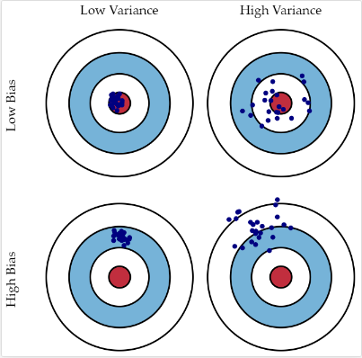

Post: 딥러닝의 모든 것(All about Deep Learning)

딥러닝의 모든 것
안녕하십니까. 최윤진입니다. 이번 포스팅을 통해 딥러닝의 전반적인 내용을 한 번 다뤄보려고 합니다.
누가 좋은 딥러닝 엔지어인가?
파이토치와 선형대수와 확률과 통계를 잘하는 사람, 최신 논문을 잘 읽는 사람은 좋은 엔지니어가 될 가능성이 높다.
논문을 읽을 때는 1. 데이터 2. 모델 3. 손실함수 4. 학습 알고리즘 를 고려하는 것이 좋습니다.
딥러닝의 중요한 아이디어
- AlexNet(2012) -> 딥러닝의 가능성을 폭발적으로 알려주었다.
- DQN (2013) -> 강화학습
- Encoder / Decoder (2014)
- Adam (2014) -> 결과가 매우 좋다.
- GAN, ResNet (2015)
- Residual Networks (2015) -> 네트워크를 깊게 쌓게 해준다.
- Transformer (2017) -> 도발적
- Bert (2018)
- Big Language Models (GPT)
- Self-Supervised Learning -> 학습 데이터를 스스로 생성한다.
신경망
신경망에서 비선형 함수를 넣어주는 이유가 무얼까? 선형적 함수로만 표현을 하게 되면은 그것은 결국 선형함수 하나로 변환 될 수 있다는 것을 의미한다. 그렇기 때문에 선형적으로 표현할 수 없는 비선형 함수 (예를 들어 활성화 함수) 를 넣어줌으로써 표현력을 극대화하는 것이다.
손실함수의 종류
- MSE
- CE
- MLE
Bias and Variance

*출처: http://scott.fortmann-roe.com*
cost를 최소화 한다는 것은 bias, variance, noise 를 최소화하는 것이다.
최적화
최적화 이론은 딥러닝에서 매우 중요한 개념입니다. 일반화와 최적화의 균일점을 찾아라 ! 그래서 우리는 cross-validation 을 사용합니다.
Bagging
학습데이터를 여러개를 만들어서 부트스트래핑을 하는것을 말합니다. 부트스트랩이란 ? 수 많은 데이터 중에 랜덤 샘플링을 여러개 만들어서 예측을 하는 것
Boosting
잘 안되는 데이터에 맞춰서 학습을 여러번 시키는 방법을 말한다.
Gradinet Descent
어떻게 산 밑으로 내려갈 것인가?
\[W_{t+1} <- Wt - \gamma G_{t}\]여러가지 테크니션
- 모멘텀
- Nesterov Accelerated Gradinet
- Adagrad
- Adadelta
- RMSStop
- Adam
Regularization
오버피팅을 방지하라 !
- Early stopping
- Parameter norm penalty
- Data augmentation
- Noise robustness
- Lable smoothing
- Dropout
- Batch normalizaion
CNN
RNN
GAN
created By yunjinchoidev ~